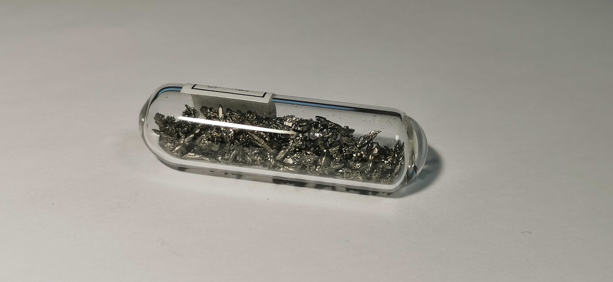
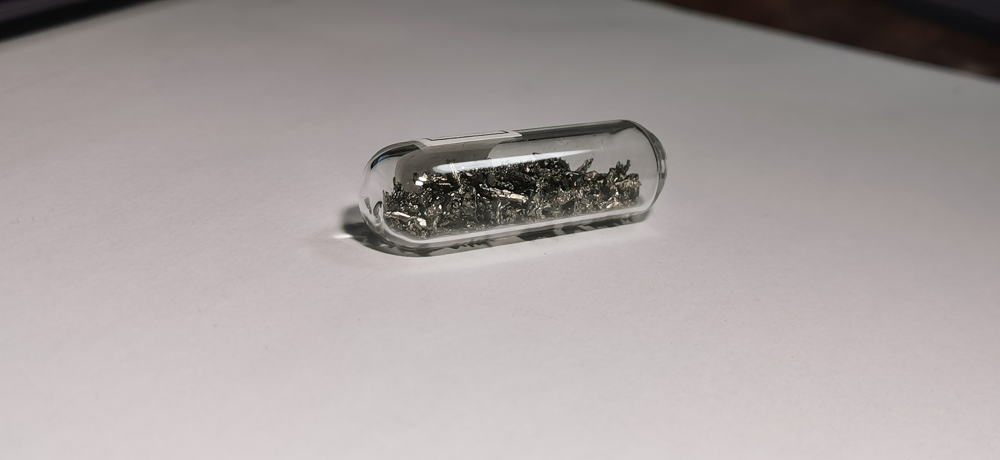
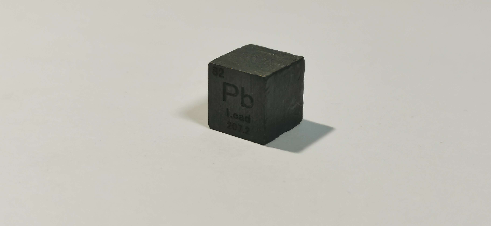
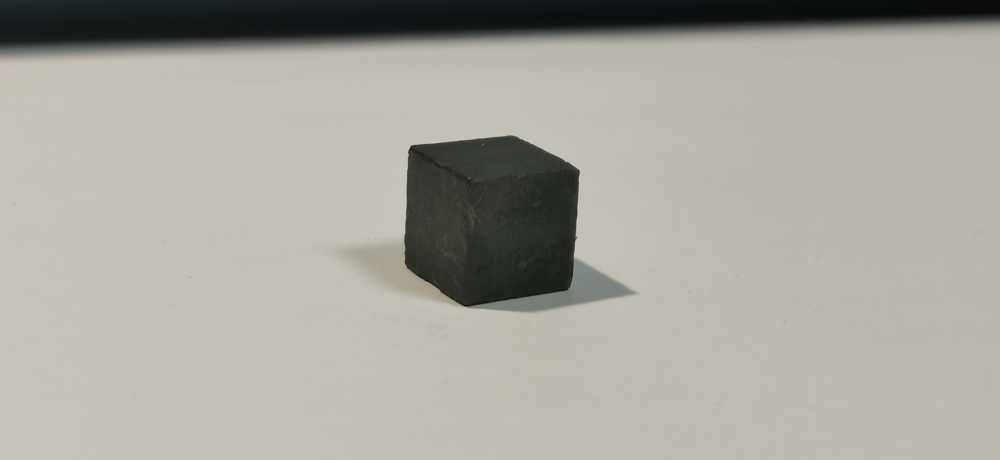

铅
2019.7 晶体 来自雨乐  
晶体：雨乐并不透露他所售样品的制作方法，不过铅晶体的制作方法大概只有电解法了。铅是很软的重金属，制作时有一定难度，例如将铅及时从电极上分离防止粘连一类，还有对有毒的可溶性铅盐和铅蒸汽的防范问题。新制的铅晶体在空气中异常容易被氧化，得到的铅会是略浅的黑色，并不像我们熟悉的铅块。
2019.4 立方 来自冥灵  
棱角：啊，这怪我没有好好保护它（也怪它自己太软）。现在拍照四角几乎已经平了，而且刻字也不甚明显了，我愧对它。
晶体：雨乐并不透露他所售样品的制作方法，不过铅晶体的制作方法大概只有电解法了。铅是很软的重金属，制作时有一定难度，例如将铅及时从电极上分离防止粘连一类，还有对有毒的可溶性铅盐和铅蒸汽的防范问题。新制的铅晶体在空气中异常容易被氧化，得到的铅会是略浅的黑色，并不像我们熟悉的铅块。
棱角：啊，这怪我没有好好保护它（也怪它自己太软）。现在拍照四角几乎已经平了，而且刻字也不甚明显了，我愧对它。